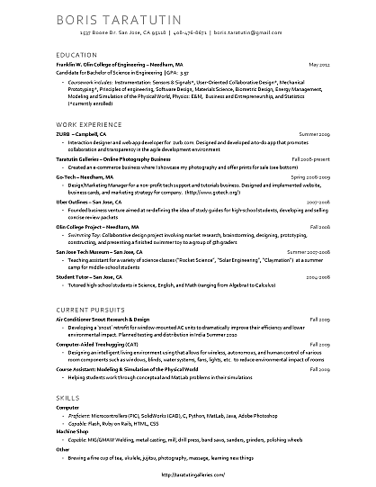
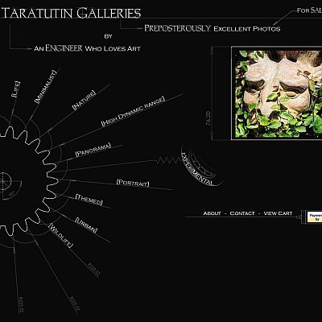
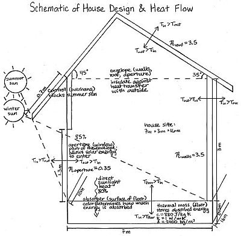

Projects
A compilation of things I've built and done over the years. I definitely learned a lot from them, and I hope you can share in that knowledge as well! Feel free to contact me with any questions about any of these, I would love to give more detailed explanationions or share plans :)
Unless otherwise specified (or unclickable), each project links to a report, or sub-page with more info. Bon Appetit! Note: I'm still building the site, so many of the detail pages won't exist yet (as of 8.08.2012).
| Top: compare/contrast of designer concept & fully-functional prototype. |
ReVerb: the $2,500 Solar-Powered SpeakerSummer 2011My project for the summer working for Qnuru was to make a functional prototype of the concept (top left) for the Re-Verb, a $2,500 solar-powered speaker That means I got to play around with solar panels, charging circuits, touch-sensitive controls, audio amplifiers, and putting and wiring and testing everything together - for a near-zero budget :). The best part? It could fill a warehouse full of dubstep for 6 hours - longer, if the solar panels were charging. Probably the most complete A->B and thorough project I have ever done |
| Links to paper (pdf) |
Our Stories and what they tell usFall 2012For a humanities project that bridged the fields of writing, psychology, anthropology, and education research, I wrote a short book that is a collection of people's life stories and core life philosophies: who they are and how they came to be that way - and what we can learn from them. This version has two interviews included in it, as well as some thoughts on narratives and what we can learn about /what/ people say, /how/ they say it, what the writer/narrator's role is, and what stories tell us about ourselves. It should be pretty engaging/entertaining, so take a read |
| Img. Links to bigger Title links to writeup (pdf) |
Epidemiology Case Study: Modelling the Spread of DiseaseFall 2011As part of a final project for a "Computational Complexity" course, two teammates and I did a bunch of research into how diseases spread through a network, how we can model this behavior through computer graphs, and how these networks respond to different parameters. Besides writing up a Case Study on the topic, we also explored algorithms for identifying the most crucial nodes to remove, in case of an epidemic - to minimize the spread of disease, and included some of our findings in the case study - leaving still some work for the user to experiment & explore. Supporting bucket of code (non-edited for release) |
| Link opens Wikipedia Page |
"Narrative Identity" Wikipedia PageSpring 2012Worked with a team of three students to write the Wikipedia page for Narrative Identity, summarizing the content learned in the past semester, and working to make the page as well-cited and validated as possible. In the end, we ended up posting our work to Wikipedia and opening it up for the world to learn about! |
| Spring 2012 |
Microfluidics Interrogation DeviceLinks to bigger imagesFor my Senior Capstone Project in Engineering (SCOPE), worked on a team of four to develop a robust, modular, and reproducable platform for interrogating, merging, and sorting microfluidic (uL-scale) droplets. My role was to develop all of the software control, UI, & algorithms - which involved controlling a laser to count photons emitted from these droplets, at 5,000 samples/second - to determine the fluorescent activity inside the droplet, and decide whether to actuate a micro-scale set of electrodes :P The platform was designed, built, tested, and shipped off to be used by Brandeis University PhD researchers, all in the span of two college semesters. |
Links to bigger images |
Relational Mapping of The (Tumblr) BlogosphereSummer 2011Working on a project to use the 'reblogs', 'likes', and other relational metrics to map the way content travels through the Tumblr Blogosphere. One of the goals is to figure out who are the big content generators (sources) and/or content movers, as well as who has the most 'popular' blogs on Tumblr (as well as a slew of other metrics). Building web crawlers, managing databases, doing graph searches - woop! (Also, I intend for this to be a long-term and potentially profitable endeavor, and if anyone is interested in joining/collaborating, that'd be great!) |
| Links to Document |
Small-Scale Process for Making Charcoal from Maize CobsSpring 2010While I was away in Kenya, I developed a small-scale process for making charcoal from maize cobs - by combining the charcoal-making techniques/ideas from my friend James and the well-known MIT D-Lab charcoal-making process. There are a number of motivations for this project. First off, charcoal is a slower-burning, longer-lasting, generally mor valuable fuel source than firewood. Secondly, many people in Kenya cook inside (using firewood), which produces a great deal of smoke - which leads to health problems. Using charcoal is a great alternative (it burns smoke-less), but unfortunately charcoal is expensive. That's there the kicker (and point 3) comes in - where maize cobs are considered a 'waste' or useless byproduct - and this process can turn 'useless' maize cobs into a great fuel source! And because of the small scale (all you need is a tin can and already-existing cooking fire), almost anybody can do it! |
Wikipedia VisualizerFall 2010Wikipedia topics are all related. We usually browse and read wikipedia one article at a time, but often we end up jumping from topic to topic based on our knowledge (or lack thereof) about their relatedness. Now, what if there was a way to browse Wikipedia purely by these relational options? Ie. you pick a topic, type it in, and are shown the 5-15 most 'related' topics, and the description (read: 'first paragraph') of the topic you typed in - and can now explore the relationships of each topic - learning about many new things in the process. What if, then, you could also chart and visualize your progress in learning across the Wikipedia pages, and gain a visualization of the knowledge/topics you've explored (and the ones you haven't)? The possibilities are endless. |
|
Starting the ICE ProgramSpring 2010Also while in Kenya, I worked with a friend of mine, Alex, to start the "ICE" program for kids - that encourages their 'innovation, creativity, and entrepreneurship'. Together, Alex and I designed and led a number of activities - ranging from working with clay, to tug-of-war competitions, to playing soccer and learning to use computers - to encourage local Kenyan kids in these areas and show them that they can do anything :D In reality, this meant working with a fabulous, kind, and well-established community group (that Alex led), and going on trips to go play with kids every friday :D |
|
Fully DFMA-ed "Hydrofire" RC BoatSpring 2012As part of a semester-long Design for Manufacturing & Assembly (DFMA) class, learned about the end-to-end product design & manufacturing process; from business & marketing, to working with manufacturers in China, to shipping & distribution - and applied the lessons learned to make an end-to-end design for an RC speedboat. We performed a full DFMA analysis (minimizing assembly and manufacture complexity, cost, and time), spec'ed out a full BOM, specified the manufacturing methods, considered environmental impact, and specified a full quality plan, assembly instructions, and CAD package - everything you'd need to actually send this out to a manufacturer & have them build it. You can see the final package here (pdf report) and the supporting appendices here. |
|
| Links to paper |
Education Publication: Self-Directed LearningFall 2012For a year and a half, I led the qualitative side of a mixed-methods study into "how do engineering students develop as self-directed learners", carried out at two Universities. With our findings, we were able to write a preliminary paper, published in the proceedings of the FIE, Frontiers in Education international conference. Our team then flew to Seattle to present the findings, which are linked to in the above link. |
| Links to lg. images |
Solar Distinction: a Solar-Power StartupSummer 2011As our group, 8-intern-wide summer project, we were told by our CEO, "start a solar company". So we did. Named "Solar Distinction", we worked with a manufacturer in China to prototype various 'designer' solar-panels, that would appeal to a higher-price point market. We designed, engineered, marketed, (and even sold!) a number of solar panels, some of which can be seen on the left. The top-left, "Kepler", is our basic "black-on-black" design; with black-binned cells, black-tape background, and black-anodized aluminum, you can slap it on a rooftop today, and not ruin the decor of your multi-million-dollar house. For the lower images, we experimented with covering the panels with various textures (even playing around with mica!) to make them more indistinguishable, and worked to develop some more 'out-there' panels, like the "Escher" modular honeycomb hexagonal panel, inspired by the natural and efficient look of bee honeycombs. We defined the brand, built the initial product line, developed prototypes, and made strides toward establishing a customer base - as a team of interns, over the course of a summer :p |
 Links to bigger image Links to bigger image |
"Social Shirts" T-Shirt DesignsSummer 2012As part of a "social experiment", on how I could get people to meet/interact more, a friend and I designed + printed four shirt designs - intended to help the individual express themselves more, as well as spark more, and more interesting conversations. These particular designs are "v.1" - designed in just an hour, off the top of my head - and represent some of my personal core life philosophies. We're still working on the big-picture/company version of this 'experiment' - so keep your eyes peeled ;D |
 Links to full-size images. Links to full-size images. Title links to final analysis summary (.xls) |
Analysis of Avg. Olin Student's Environmental ImpactFall 2011As part of a "Sustainable Design" class final project, I conducted a broad analysis of all the major areas of environmental impact, of the typical college student (at Olin College) - to determine where the highest impact comes from. A partner and I analyzed the impact of food, transportation, housing, heating/cooling, electricity, and general "stuff" across three student 'types' ('high-impact', 'avg-impact', and 'lo-impact') to identify the categories of biggest environmental impact, and the best opportunities (strategies) for reduction of impact, and the student demographics that should be targeted - for maximum reduction. |
Starting a Photography BusinessSpring 2010One of the things I tried to do while in Kenya was help those around me identify market opportunities and start their own sustainable businesses - that can keep helping them financially and improve their quality of life. One such business was working with my friend Moses to achieve his idea of starting a photography business (a local market need that he identified). So, I provided what I could - instruction, experimentation opportunities (with my digital camera), and methods for acquiring film & a film camera. Now he's got a business he can call his own! |
|
Raising ChickensSpring 2010Similarly, I helped my friend Adrina, a widow and mother of three, start raising chickens as a way of creating a long-lasting source of revenue (her current source being on-and-off catering and personal cooking/cleaning stints). So, we worked together to build a chicken house, and I helped her gain access to people & resources who knew how to raise chickens, and together we experimented with a non-traditional method (that involves seperating the hen from her eggs/chicks) of raising hens that allows them to lay every couple weeks (instead of 2-3 times a year). |
|
Low-Cost Locally-Sourced Groundnut ShellerSpring 2010The 'Full Belly Project' has developed a fantastic tool called the "Universal Groundnut Sheller" to overcome the challenge of groundnut (peanut) farmers of shelling their nuts (a very time and labor-intensive process). However, the machine that they designed, though ultimately assemblable with local components, requires a costly (~$500) one-time investment in a mold for the outer concrete shape. Working off of an idea that someone else had for replacing the mold with buckets, Rodgers (a local Kenyan student) and I worked to develop a truly low-cost groundnut sheller that could be built entirely using local processes and materials. In the end, we managed to get the construction cost down to ~$12-$15 USD and the nut breakage down to 1 broken for every 10/11 whole (which meets/exceeds the 'industry' standard). Now, we're working on finishing up the documentation (left) for creating this sheller and then getting the word out! |
|
Biomimetic Robotic Tuna ResearchFall 2010One semester, I got to work on re-vamping & modularizing the CAD for a biomimetic robotic tuna, as well as re-design the actuation of the tuna to be based off of a linear-actuator tendon-drive, truly biomimetic system. CAD, epoxy, sexy renders, more CAD, some more CAD, and spec'ing tendon drives. Woop! |
|
Cheap, Customizable Data LoggerSpring 2010Designed & developed a data logger from scratch, which was used to collect data for over 20 final projects in a freshman introductory course. Designing & developing it means I did everything from conceptualizing and proposing the idea to spec'ing out the components, to writing embedded C code, handling low-level SPI communications, designing and building guis in python, and even laying out a PCB board! It was, bar none, the most independent and successful project I've undertaken, and it was cool to see it actually used! The final logger had variable sample rates (1sample/ms - 1 sample/day), 13-bit resolution (.001 V), 4 dual-ended inputs, and easy data download via USB. Relevant Skills: Product design, component selection, circuit design, PIC microcontrollers, PCB design, C, Python, GUI design, testing |
|
BallistocardiogramSpring 2010Take one off-the-shelf digital bathroom scale, rip out the existing electronics, slap on one set of high-precision, custom-designed, noise-filtering circuitry, and your have yourself a bathroom scale that can show you your heartbeat. Nifty, eh? Ok, I'm not going to lie, this is one of my personal favorites: I mean you can stand on this scale, and see your heartbeat, much like a $1000+ EKG machine would give you - except this cost ~$40 using off-the-shelf parts, and yet it is sensitive enough to detect the QRS & TUP heartbeat complexes! Coming to a bathroom near you! Relevant Skills: Sensors, signal filtering and amplification, circuit design, debugging, prototyping |
|
 |
User-Oriented Collaborative DesignSpring 2010In short: I, alongide 3 team members, undertook an entire user-oriented design process centered around inter-city high school teachers within the span of a semester. We conducted a full-on ethnographic study, interviewed teachers, observed them, co-designed with them, and brainstormed & ideated like you wouldn't believe (sticky notes, literally, went flying). In the end, we came up with the product, 'Learning Link', which aims to improve inter-city high school teacher's ability to be effective teachers. The 'Learning Link' enables teachers to quickly receive real-time information about students' comprehension during class. After explaining a concept, teachers can use the 'teacher link' to poll the students on their comprehension of that topic, and respond appropriately - by revisiting a topic, or helping individual confused students. Relevant Skills: User-Oriented Design, brainstorming, ethnographic studies, creativity, teamwork |
Transmission (The 'Nutcrusher')Spring 2010Alongside a team of 5, designed and fabricated a high-precision (high tolerance) transmission for a class final project under material/time constraints. We were given a set of transmission elements that we had to use, and a limited supply of material. So between figuring out the layout, aesthetics, and system design, calculating gear tolerances, milling for hours into the night, and an impromptu taco bell run at 1 AM, we get this beauty. Relevant Skills: Mechanical design, tolerancing, gear design, fabrication (milling), assembly, brainstorming, teamwork |
|
Robotic TurtleSpring 2010Within the span of 2 weeks and alongside 4 team members, researched the biometric shape and motion of a sea turtle, turned it into a robotic system, and used SolidWorks to CAD a model that was then sent off to an RP (rapid prototyping - plastic printing) machine. The parts have just come back from being printed by the RP machine, and we're in the process of epoxying, fiber glassing (to increase their strength), and assembling the components into a working robotic turtle. Relevant Skills: SolidWorks, epoxy & fiberglass, biometric research, RP machines, system design, teamwork, design, prototyping |
|
Robotic Eel ('Sergei')Spring 2010As part of a Mechanical Prototyping class, researched the anguilliform motions and body dimensions of a moray eel, came up with a biometric design, implemented it in SolidWorks, water-jet cut the parts, and constructed a prototype using sheet metal prototyping techniques... All on a team of 5 colleagues, and within a 3-week timeframe.
|
|
Pic Microcontroller DebuggerWinter 2010After falling in love with microcontrollers and spending countless hours of working with them, I learned very well the frustrations of debugging firmware. However, 3rd party debuggers were almost exclusively restrivie, non-customizable, and cost money. Instead of accepting frustration, I saw an opportunity and decided to build my own open-source and customizable PIC microcontroller debugger. This particular version is built in Python and connects the PIC to the computer via USB. Download the project. See a demo. |
|
| Links to Ja3Bo.com |
Pedal-Power GeneratorFall 2009Talking to a friend, I found out that she had a space DC motor lying around that apparently makes a great generator. At the same time, I had just aquired an old, broken-down bike, no longer good for riding. The only logical conclusion was to hack apart the bike and make a pedal-power generator! My friend James and I tackled this project furiously, iterating through 3 prototypes, building everything out of scrap material, getting some practice with welding and milling in the process, and spending 20+ hours on it. Documentation can be found on http://ja3bo.com/ |
| Links to Ja3Bo.com |
Smart FanFall 2009A central part of the Ja3Bo 'sustainabile smart room' endeavor, I present to you the smart fan! All of the electronics are built into the base of this (salvaged) fan. With the aid of a PIC microprocessor and a couple of sensors, this fan can measure the temperature of the inside & outside air, compare them to a user-defined setpoint, and make intelligent decisions about heating/cooling. Read more at http://ja3bo.com/ |
Tea Kettle DesignFall 2009Both of us vehement tea fanatics, my friend Chris and I got to thinking one day what the tea movement was missing. One thing that we realized was almost all tea kettles were opaque, and the beauty of boiling water was hidden from the user. So we did some quick brainstorming and came up with this sleek and simple concept for a tea kettle that would accentuate the simple beauty of boiling water. The walls would be double-insulated glass/acrylic, and it would have touch-sensitive controls, but we're still finessing the details.
|
|
Herbal Tea BlendingTea is amazing. It can clean out your system, give you energy, provide vitamins, ease colds, and it tastes good! So I set out to do what it takes months/years for industry to do - come up with tasty, cohesive, and beneficial tea blends. So I ordered $150/20lbs of tea and set about blending! |
|
| Links to pdf |
ResumeFall 2009Everything you do should have thought and effort put into it. With this in mind, I gave the traditional resume a think-over and postulated that applying some graphic design principles and a dash of personality would do it well. Check it out |
Business CardFall 2009It started as an epic ideation session with my friend Nik about creative ways to market oneself, engage people, and be different. It ended with a business card that (hopefully) is memorable, to-the-point, and provides talking points for future communications. |
|
QPlace Book CoverFall 2009QPlace is a local Christian organization that helps start neighborhood bible studies and has a line of study guides that the studies are based around. They were re-designing the content and covers of their study guides, and, through the help of a neighbor, I ended up volunteering my photography services to them. I brainstormed some ideas, sent them a few pictures, and they chose one of them to be the cover of the Mark study guide. |
|
| Links to gotech.org |
Go-TechSpring 2009A business venture I co-launched and did the marketing & design for. It was a (short-lived) computer-repair business in the greater Boston area that made some quick profits, but was eventually abandoned in search of something bigger and better. http://www.gotech.org/ |
| Links to taratutingalleries.com |
Taratutin GalleriesFall 2008A website I developed to showcase my photography and offer prints for sale I did this in a semester and taught myself web design, html, css, and e-commerce in order to do it. Many sleepless nights and an epic trip to cape cod later... http://taratutingalleries.com/ |
Penguin Swimming ToyFall 2008Alongside a 3-person crew, researched, designed, and prototyped a biomnemetic penguin 'swimmer' toy for 5th graders. As an ultimate test of our concept, real-life 5th graders played with and evaluated the toy. As it turns out, penguins are cute. |
|
HopperFall 2008As a first introduction to bio mimicry, I studied the jump motions of small critters like click-beetles and grasshoppers, and then designed & prototyped a bio-inspired 'hopper' mechanism. |
|
|  |
Passive Solar House SimulationFall 2008As a mini-research project into sustainability, a partner and I explored the parameters involved in building a house whose indoor temperature is passively regulated by the sun & environment. We explored variables like roof protrusion, window size, floor materials, insulation coefficients, and various angles and dimensions in order to maximize passive temperature regulation. The goal is to have a house heated by the low winter sun, but not affected by the high summer sun - in order to stabilize internal temperatures throughout the day. |
Trebuchet SimulationFall 2008Modeled and simulated a medieval trebuchet using Lagrangian Mechanics, accounting for 9 variables (2 fulcrum radii, 2 masses, 2 mass lengths, 3 angles) .. And got some sweet-looking plots and animations out of it |
|
Trebuchet BuildSpring 2008In one action-packed day, built a trebuchet with a friend completely out of scrap material - discarded wood, a door, and a weight bench bar. It totally outperformed the other trebuchets built by our classmates, and proved, once again, that you don't need brand-new materials to build good things |
|
Custom LongboardSpring 2008Conceptualized, designed, and constructed a customized longboard. I sketched a bunch of board shapes, then manually transferred the small sketch onto a plywood board. I also traded photography favors in exchange for a cool griptape design, which I then laboriously and meticulously cut out the pattern onto the sandpaper-like griptape and carefully applied it to the board. Oh and I stained and lacquered the bottom very thoroughly. 8 times. |
|
Pneumatic Air GunSpring 2008Air soft guns are cool, especially the C02-powered ones. But they and the gas costs lost of money. So why not build your own? Use a bike pump to store air in six 2-liter bottles (bursting-strength: ~120psi), route the air to the barrel (an aluminum pipe) using a 200 psi-rated hose, and use an air-compressor trigger with a custom-built gravity-ammo feeder... then put it all into a backpack and you've got a terrifying, ghost-busters like home-built airsoft gun! |
|
Brazed Copper Picture FrameSpring 2008Brazed some scrap copper piping together to make a unique picture frame. The brazing left really beautiful discolorations on the copper, which I decided were artistic and kept. |
|
 |
Laptop StandSpring 2008Laptops get proverbially hot, are at an awkward angle, laptop stands are expensive, and I am a college student. Therefore, I cut some holes in a binder, glued on some legs, and got a perfectly-functional laptop stand. |
Chair RefurbSpring 2008Lots of old furniture is thrown out simply because it looks dingy and mangly. This chair used to have rusted/dinged chrome legs and a battered and torn fabric covering. It was pretty sad. However, a thorough sanding, coat of spray paint, new cushion, and red leather cover later, and you've got yourself a brand-new chair! |
|
Uber OutlinesFall 2007As a budding AP student and nerd in high school, I quickly became frustrated when attempting to study for AP tests - the study guides on the market were almost as long as the 1000+ page textbooks, emphasized nothing, and seemed to be written for people who never learned the material in the first place! There was obviously a gap in study guides for students who had studied hard, yet didn't know what topics were important, and just needed a refresher of the main subjects and big picture concepts. So I filled that gap and created my own 'uber outline' study guides, which I then marketed and sold to my classmates for a nominal fee. Now, instead of 1000+ page textbooks/reviews, you could get the major details of a subject in about 30. |
{kind=link}
{kind=link}
{kind=link}
{kind=link}
{kind=link}
{kind=link}
{kind=link}
{kind=link}
{kind=link}
{kind=link}
{kind=link}
{kind=link}
{kind=link}
{kind=link}
{kind=link}
{kind=link}
{kind=link}
{kind=link}
{kind=link}
{kind=link}
{kind=link}
{kind=link}
{kind=link}
Ze Meeni Naveegation!
Quickly navigate to where you want to go:- data logger
- ballistocardiogram
- uocd
- transmission
- robotic turtle
- robotic eel
- pic debugger
- pedal-power generator
- ac duct research
- smart fan
- tea kettle
- herbal tea blending
- glass
- resume
- business card
- book cover
- go-tech
- taratutin galleries
- penguin swimmer
- hopper
- passive solar house
- trebuchet simulation
- trebuchet build
- longboard
- pneumatic air gun
- copper picture frame
- laptop stand
- chair refurb
- uber outlines